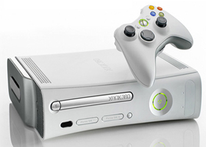

Família Xbox!!!
Em 2001 chegava ao mercado americano o Xbox, primeiro console da Microsoft, uma promessa que acabaria gerando um grande retorno para a empresa e teria sucessores garantidos e a altura do PlayStation, que no momento dominava o mercado.
Em 2005, o Xbox 360, Uma grande vantagem de seus concorrentes foi o Kinect, introduzido em 2010. O lançamento mais recente o XBox One.
O lançamento mais recente da Microsoft? O Xbox Series X
 |
 |
 |
 |